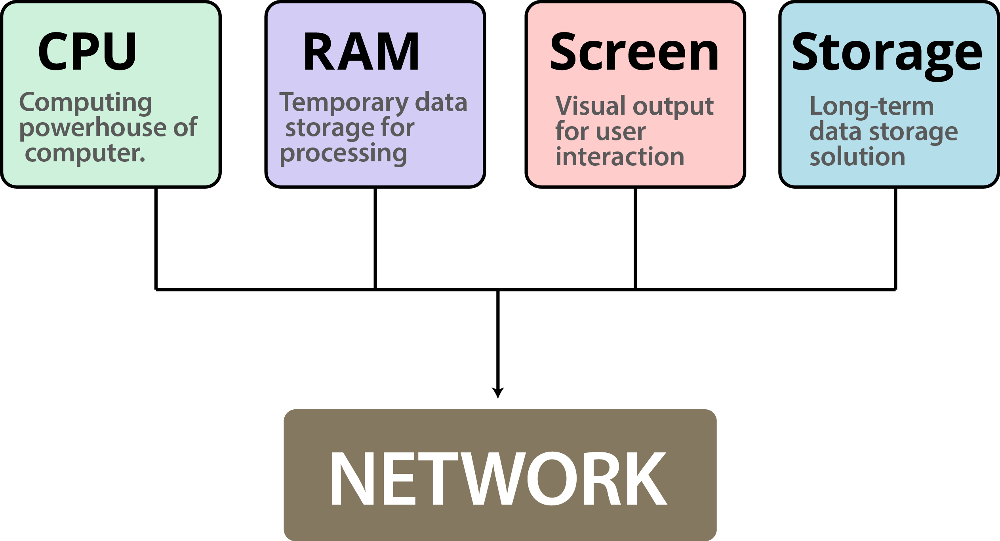
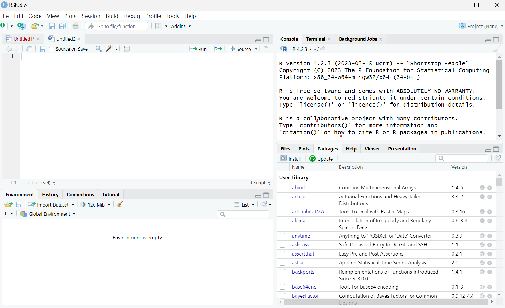
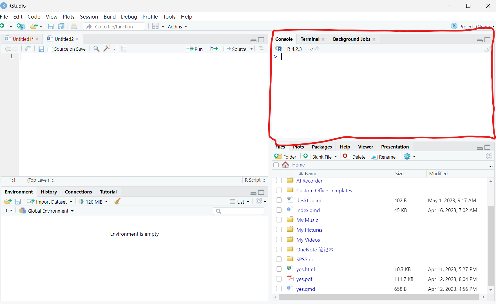

2 Introduction
The R environment
In this chapter, our aims are to introduce the main advantages and properties of programming, to familiarize ourselves with the R environment, and to learn how to write and execute basic expressions in R.
2.1 Programming
In this section, we are going to demontrate the way that programming differs from Graphical User Interfaces (GUI), and its advantages, through two examples. The first example (Section 1.1.1.2) shows how the graphical interface hides essential details about the data we are working with, and ways to interact with them. The second example (Section 1.1.1.3) is similar, but related to spatial data—it shows how a seemingly simple operation is in fact complex when working with a graphical interface, but it is made simple through programming.
2.1.1 Why is programming necessary?
Programming is an essential skill for spatial data analysis due to the complexity of the data involved. Spatial data analysis involves working with data that has a geographic component, such as maps, satellite imagery, and GPS coordinates. This type of data can be incredibly large and complex, making it difficult to work with using traditional data analysis tools. Programming allows analysts to automate tasks, manipulate data, and create custom algorithms that can handle large amounts of spatial data. In addition, programming languages such as Python and R have libraries specifically designed for spatial data analysis, making it easier for analysts to work with this type of data. Overall, programming is necessary for spatial data analysis because it allows analysts to efficiently and effectively work with complex spatial data.
2.1.2 What is programming?
A computer program is a sequence of text instructions that can be “understood” by a computer and executed. A programming language is a machine-readable artificial language designed to express computations that can be performed by a computer. Programming is the preferred way for giving instructions to the computer.
Programming is the process of designing, writing, testing, and maintaining computer programs. It involves using various programming languages and tools to create software that can perform specific tasks. When it comes to data analysis, programming plays a crucial role in processing and analyzing large volumes of data. Data analysis is the process of examining data sets to extract meaningful insights and information.
Programming provides the necessary tools and techniques to manipulate and analyze data efficiently. This includes using programming languages such as Python, R, and SQL, as well as specialized libraries and frameworks for data analysis. With programming, data analysts can automate repetitive tasks, visualize data, and build complex models to make predictions and identify patterns. In summary, programming is an essential skill for data analysts as it enables them to work with large datasets and extract valuable insights from them.
2.1.3 Computer hardware
Computing is an essential aspect of modern life, and it comprises of five key elements that are crucial for its functioning (Figure 2.1). The first element is the Central Processing Unit (CPU), which is the brain of a computer. It performs all the processing tasks and manages the computer’s hardware and software components. The second element is Random Access Memory (RAM), which stores data temporarily and enables the CPU to access it quickly. The third element is the Display, which shows the output of the CPU’s processing in a visual format. It allows users to interact with the computer and access information easily.
The fourth element is Storage, which stores all the data and programs permanently, even when the computer is turned off. It includes hard drives, solid-state drives, and other types of storage devices. The final element is Network, which enables computers to communicate with each other and share data over a network. It includes wired and wireless networks and is crucial for internet connectivity. Understanding these five key elements of computing is essential for anyone who uses technology in their daily lives.
2.1.4 Object-oriented programming
In object-oriented programming, the interaction with the computer takes places through objects. Each object belongs to a class: an abstract structure with certain properties. Objects are in fact instances of a class.
The class comprises a template which sets the properties and methods each object of that class should have, while an object contains specific values for that particular instance (Figure 1.12).
For example:
All cars we see in the parking lot are instances of the “car” class
The “car” class has certain properties (manufacturer, color, year) and methods (start, drive, stop)
Each “car” object has specific values for the properties (Suzuki, brown, 2011)
Figure 1.12: An object (https://www.w3schools.com/js/)
In R, as we will see later on, everything we work with are objects. For example, a raster—such as rainfall.tif which we mentioned earlier (Section 1.1.1.3)—that we import into R is actually translated to an object of a class named stars. The object has numerous properties, such as the number of rows an columns, the resolution, the Coordinate Reference System (CRS), and so on.
The following two expressions are used to import the raster rainfall.tif into the R environment (we will elaborate on that later on, in Sections 2.2 and 5.3.6):
library(stars) r = read_stars("rainfall.tif")Once imported, an object named r, belonging to the class named stars is used to represent rasters in R, exists in the R environment (more specifically in the RAM, see Section 1.1.3). For example, printing to object displays some of its properties and their specific values, such as a resolution (delta) of 1000 meters:
r ## stars object with 2 dimensions and 1 attribute ## attribute(s): ## rainfall.tif ## Min. :200.0 ## 1st Qu.:373.3 ## Median :500.7 ## Mean :483.8 ## 3rd Qu.:585.6 ## Max. :908.5 ## NA's :20780 ## dimension(s): ## from to offset delta refsys point values x/y ## x 1 153 616965 1000 WGS 84 / UTM zone 36N FALSE NULL [x] ## y 1 240 3691819 -1000 WGS 84 / UTM zone 36N FALSE NULL [y]You don’t need to worry about the meaning of the different properties in the above output yet. Again, we are going to cover these in detail later on (Sections 5.3.8.1–5.3.8.3 and 6.3).
2.1.5 Inheritance
One of the implications of object-oriented programming is inheritance. Inheritance makes it possible for one class to “extend” another class, by adding new properties and/or new methods. Using our car example (Figure 1.12):
A “taxi” is an extension of the “car” class, inheriting all of its properties and methods
In addition to the inherited properties, a “taxi” has new properties (taxi company name) and new methods (switching the taximeter on and off)
In R, the idea of inheritance is realized in various ways. For example, every complex object (such as a raster) is actually a collection of smaller components (the properties). Looking at the structure of the raster object r (using the str function, see Section 4.1.4.2) reveals that it is, in fact, a collection of many small objects belonging to simpler classes, each holding a piece of information. For example, the resolution property (named delta) is in fact a numeric vector (class numeric, see Section 2.3) of length 1 (i.e., containing a single value, 1000):
str(r) ## List of 1 ## $ rainfall.tif: num [1:153, 1:240] NA NA NA NA NA NA NA NA NA NA ... ## - attr(*, "dimensions")=List of 2 ## ..$ x:List of 7 ## .. ..$ from : num 1 ## .. ..$ to : num 153 ## .. ..$ offset: num 616965 ## .. ..$ delta : num 1000 ## .. ..$ refsys:List of 2 ## .. .. ..$ input: chr "WGS 84 / UTM zone 36N" ## .. .. ..$ wkt : chr "PROJCRS[\"WGS 84 / UTM zone 36N\",\n BASEGEOGCRS[\"WGS 84\",\n DATUM[\"World Geodetic System 1984\",\"| __truncated__ ## .. .. ..- attr(*, "class")= chr "crs" ## .. ..$ point : logi FALSE ## .. ..$ values: NULL ## .. ..- attr(*, "class")= chr "dimension" ## ..$ y:List of 7 ## .. ..$ from : num 1 ## .. ..$ to : num 240 ## .. ..$ offset: num 3691819 ## .. ..$ delta : num -1000 ## .. ..$ refsys:List of 2 ## .. .. ..$ input: chr "WGS 84 / UTM zone 36N" ## .. .. ..$ wkt : chr "PROJCRS[\"WGS 84 / UTM zone 36N\",\n BASEGEOGCRS[\"WGS 84\",\n DATUM[\"World Geodetic System 1984\",\"| __truncated__ ## .. .. ..- attr(*, "class")= chr "crs" ## .. ..$ point : logi FALSE ## .. ..$ values: NULL ## .. ..- attr(*, "class")= chr "dimension" ## ..- attr(*, "raster")=List of 3 ## .. ..$ affine : num [1:2] 0 0 ## .. ..$ dimensions : chr [1:2] "x" "y" ## .. ..$ curvilinear: logi FALSE ## .. ..- attr(*, "class")= chr "stars_raster" ## ..- attr(*, "class")= chr "dimensions" ## - attr(*, "class")= chr "stars"The benefit of inheritance is that the programmer does not need to write every class from scratch. Instead, new classes can be built on top of existing ones, while re-using their properties and methods.
2.2 Starting R
Now that we covered some central theoretical concepts related to programming, we are staring the practical part—writing R code to work with spatial data. In this chapter, we will become familiar with the R environment, its basic operators and syntax rules. To install R on a Windows computer, follow these steps:
- Visit the official R website at https://www.r-project.org/.
- Click on the “Download R” link in the “Getting Started” section.
- Choose a CRAN mirror site that is geographically closest to your location.
- Select the appropriate version of R for your operating system (Windows in this case).
- Click on the download link for the base distribution of R.
- Run the installer and follow the prompts to complete the installation process.
- Once installed, launch R by clicking on its icon on your desktop or from the Start menu.
The current version at the time of writing (October 2020) is R version 4.3.0 released on 2023-04-21. Once R is installed, we can open the default interface (RGui) with Start → All Programs → R → R x64 4.3.0 (Figure 2.2).

We will be working with R through a more advanced interface than the default one, called the RStudio. It can be downloaded from the RStudio company website. The current version is RSTUDIO-2023.03.1-446. Once both R and RStudio are installed, we can open RStudio with Start → All Programs → RStudio → RStudio Figure 2.3.
2.2.1 Console
In this section, we will only work with the console shown in Figure 2.4. The console in RStudio is an essential tool for coding in R. It is a command-line interface that allows users to interact with the R programming language. The console is where users can enter and execute R commands and see the output of those commands.
It is a powerful tool for data analysis and statistical modeling, allowing users to quickly test and iterate on code. The console also displays error messages and warnings, making it easier to debug code. In addition, the console can be used to install and load packages, set working directories, and manage data objects. Overall, the console in RStudio is a valuable tool for any programmer working with R, providing a streamlined way to write, test, and debug code.

2.2.2 Basic R expressions
2.2.3 Console input and output
The simplest way to interact with the R environment is typing an expression into the R console, pressing Enter to execute it. For example, let’s type the expression 1+3+5+7:
After we press Enter, the expression 1+3+5+7 is sent to the processor. The returned value, 16, is then printed in the console. Note that the value 16 is not kept in in the RAM or Mass Storage, just printed on screen.
We can type a number, the number itself is returned:
We can type text inside single ' or double " quotes:
The last two expressions are examples of constant values, numeric or character. These are the simplest type of expressions in R.
2.2.4 Arithmetic operators
Through interactive use of the command line, we can experiment with basic operators in R. For example, R includes the standard arithmetic operators (Table 1.1).
| Table 1.1: Arithmetic operators | |
| Operator | Meaning |
+ |
Addition |
- |
Subtraction |
* |
Multiplication |
/ |
Division |
^ |
Exponent |
Here are some examples of expressions that use the arithmetic operators:
Important
We can use the up ↑ and down ↓ keys to scroll through the executed expressions history. Try to execute several different expressions, then scroll up until you reach one of the previous expressions and re-execute it by pressing Enter. Scrolling through expression history is convenient for going back to previously exceuted code, without re-typing it, possibly making modifications before excecuting it once again.
Note that very large or very small numbers are formatted in exponential notation:
Infinity is treated as a special numeric value, Inf or -Inf:
-1 *We can control operator precedence with brackets, just like in math:
It is recommended to use brackets for clarity, even where not strictly required.
2.2.5 Spaces and comments
The interpreter ignores everything to the right of the number symbol #:
1 * 2 # * 3 The # symbol is therefore used for code comments:
# Multiplication example 5 * 5 Why do you think the code outputs are marked by
##in the code sections (such as## [1] 25in the above code section)?
The interpreter ignores spaces, so the following expressions are treated exactly the same way:
1 + 1 1+1 1+1We can type Enter in the middle of an expression and keep typing on the next line. The interpreter displays the + symbol, which means that the expression is incomplete (Figure 1.18):
5 * 2 #Figure 1.18: Incomplete expression
We can exit from the “completion” state, or from an ongoing computation, any time, by pressing Esc.
Clearing the console can be done with Ctrl+L.
2.2.6 Conditional operators
Conditions are expressions that use conditional operators and have a yes/no result, i.e., the condition can be either true or false. The result of a condition is a logical value, TRUE or FALSE:
TRUEmeans the expression is trueFALSEmeans the expression is false(
NAmeans it is unknown)
The conditional operators in R are listed in Table 1.2.
| Table 1.2: Conditional operators | |
| Operator | Meaning |
== |
Equal |
> |
Greater than |
>= |
Greater than or equal |
< |
Less than |
<= |
Less than or equal |
!= |
Not equal |
& |
And |
| |
Or |
! |
Not |
For example, we can use conditional operators to compare numeric values:
1 < 21 > 22 > 22 >= 22 != 2“Equal” (==) and “not equal” (!=) are opposites of each other, since a pair of values can be either equal or not:
1 == 1 1 == 2 The “and” (&) and “or” (|) operators are used to create more complex conditions. “And” (&) returns TRUE when both sides are TRUE:
(1 < 10) & (10 < 100) (1 < 10) & (10 > 100) “Or” (|) returns TRUE when at least one of the sides is TRUE:
The last conditional operator is “not” (!), which reverses TRUE to FALSE and FALSE to TRUE:
Run the following expression and explain their result:
FALSE == FALSE
!(TRUE == TRUE)
!(!(1 == 1))
2.2.7 Special values
R has several special values, as listed in Table 1.3.
| Table 1.3: Special values in R | |
| Value | Meaning |
Inf |
Infinity |
NA |
Not Available |
NaN |
Not a Number |
NULL |
Empty object |
We already met Inf, and have shown how it can be the result of particular arithmetic operations such as division by zero (Section 1.3.2):
NA specifies an unknown, or missing, value. Later on, we are going to encounter several situations where NA values can arise. For example, empty cells in a table imported into R, such as from a CSV file (Section 4.4), are encoded in R as NA values.
NA values can participate in any arithmetic or logical operation. For example:
Why do you think the result of the above expression is
NA?
What do you think will be the result of the expression
NA == NA?
NaN is less relevant for the material of this book, but it is important to be familiar with it. NaN values often result from “meaningless” arithmetic operations:
For most practical purposes, NaN values behave exactly the same way as NA values.
Finally, the value of NULL specifies an empty object:
NULL has some uses which we will discuss later on (Section 4.2.3).
2.2.8 Functions
In math, a function (Figure 1.19) is a relation that associates each element x of a set X, to a single element y of another set Y. For example, the function y=2x�=2� is a mathematical function that associates any number x� with the number 2x2�.
Figure 1.19: A function
The concept of functions in programming is similar. A function is a code piece that “knows” how to do a certain task. Executing the function is known as a function call. The function accepts zero or more objects as input (e.g., 2) and returns a single object as output (e.g., 4). In addition to the returned value, the function may perform other task(s), known as side effects (for example: writing information to a file, or displaying graphical output).
The number and type of inputs the function needs are determined in the function definition; these are known as the function parameters (e.g., a single number). The objects the function received in practice, as part of a particular function call, are known as arguments (e.g., 2).
A function is basically a set of pre-defined instructions. There are thousands of built-in functions in R. Later on we will learn to define our own functions (Section 3.3).
A function call is composed of the function name, followed by the arguments inside brackets () and separated by commas ,. For example, the sqrt function calculates the square root of its input. For example, the following expression calls the sqrt function with the argument 4:
Here, the sqrt function received a single argument 4 and returned its square root 2.
As a side note, it is interesting to mention that everything we do in R in fact involves functions (Figure 1.20).
Figure 1.20: From Chambers 2014, Statistical Science (https://arxiv.org/pdf/1409.3531.pdf)
Even arithmetic operators are functions, just written in a special way. The arithmetic operators can be executed in the “ordinary” function syntax, too, as follows:
2.2.9 Error messages
Consider the following three different expressions:
sqrt("16")sqrt(a)In last two expressions we got error messages, because the expressions were illegal, i.e., not in agreement with the syntax rules of R. The first error occurred because we tried to run a mathematical operation sqrt on a text value "a". The second error occurred because we tried to use a non-existing object a. Any text without quotes is treated as a name of an object, i.e., a label for an actual object stored in RAM. Since we don’t have an object named a we got an error.
2.2.10 Pre-loaded objects
When starting R, a default set of objects is loaded into the RAM, such as TRUE, FALSE, sqrt and pi. For example, type pi and see what happens:
2.2.11 Decimal places
Is the value of π� stored in memory really equal to the value we see on screen (3.141593)? Executing the following condition reveals that the answer is no:
If not, what is the difference?
The reason for the discrepancy is that, by default, R prints only the first 7 digits:
When working with R we should keep in mind that the printed value and object contents are not always identical, so that the printed output is more convenient for the user.
The number of digits to print can be changed with an expression such as
options(digits=22). Try running the latter expression, then print the value ofpionce again.
2.2.12 Case-sensitivity
R is case-sensitive, it distinguishes between lower-case and upper-case letters. For example, TRUE is a logical value, but True and true are undefined:
Truetrue2.2.13 Classes
R is an object-oriented language (Section 1.1.5), where each object belongs to a class. The class functions accepts an object and returns the class name:
Explain the returned value of the following expressions.
class(1 < 2)class("logical")class(1) == class(2)class(class)class(class(sqrt))class(class(1))2.2.14 Using help files
Every built-in object is associated with a help document, which can be accessed using the help function or the ? operator:
help(class) ?class ?TRUE ?pi2.3 Packages
So far we’ve been using a couple functions that are included with R out-of-the-box such as search() and q(). We say that these functions are from “Base R”. But, one of the amazing things about R is its users’ community that create new functions and packages. An R package is a collection of functions, data, and documentation that extends the capabilities of base R. Using packages is key to the successful use of R. The majority of the packages that you will learn in this manual are part of the so-called tidyverse, which is an ecosystem of packages that share a common philosophy of data and R programming, and are designed to work together naturally.
The tidyverse is a coherent system of packages for data manipulation, exploration and visualization that share a common design philosophy. The Tidyverse (Wickham et al. 2019) packages form a core set of functions that will allow us to perform most any type of data cleaning or analysis we will need to do. We will use the following packages from the tidyverse
- ggplot2—for data visualisation.
- dplyr—for data manipulation.
- tidyr—for data tidying.
- readr—for data import.
- purrr—for functional programming.
- tibble—for tibbles, a modern re-imagining of data frames.
2.3.1 Installing R packages
For us to use tidyverse and any other package that is not included in Base R, we must install them first. The easiest way to install packages is to use the install.packages() command. For example, let’s go ahead and install the tidyverse package on your machine:
On your own computer, type that line of code in the console, and then press enter to run it. R will download the packages from CRAN and install it to your computer. If you have problems installing, make sure that you are connected to the internet, and that https://cloud.r-project.org/ isn’t blocked by your firewall or proxy.
2.3.2 Loading installed packages
Now we’ve installed the package, but we need to tell R that we are going to use some functions within the tidyverse package. With exception to base R package, add on package that are installed must be called with either library or require functions to make their tools accessible in R session. Let’s us load the tidyverse package we just installed
You notice that when we load tidyverse, it popup a notification message showing the loaded packages and the conflicts they bring in. These conflicts happen when packages have functions with the same names as other functions. This is OK when you prefer the function in a package like tidyverse rather than some other function. Basically the last package loaded in will mask over other functions if they have common names.
2.3.3 Flavours of R: base and tidyverse
R is a programming language, and just like any language, it has different dialects. When you read about R online, you’ll frequently see people mentioning the words “base” and “tidyverse.” These are the two most common dialects of R. Base R is just that, R in its purest form. The tidyverse is a collection of add-on packages for working with different types of data. The two are fully compatible, and you can mix and match as much as you like. Both ggplot2 and magrittr are part of the tidyverse.
In recent years, the tidyverse has been heavily promoted as being “modern” R which “makes data science faster, easier and more fun.” You should believe the hype. The tidyverse is marvellous. But if you only learn tidyverse R, you will miss out on much of what R has to offer. Base R is just as marvellous, and can definitely make data science as fast, easy and fun as the tidyverse. Besides, nobody uses just base R anyway - there are a ton of non-tidyverse packages that extend and enrich R in exciting new ways. Perhaps “extended R” would be better names for the non-tidyverse dialect.
Anyone who tells you to just learn one of these dialects is wrong. Both are great, they work extremely well together, and they are similar enough that you shouldn’t limit yourself to just mastering one of them. This book will show you both base R and tidyverse solutions to problems, so that you can decide for yourself which is faster, easier, and more fun.
A defining property of the tidyverse is that there are separate functions for everything, which is perfect for code that relies on pipes. In contrast, base R uses fewer functions, but with more parameters, to perform the same tasks. If you use tidyverse solutions there is a good chance that there exists a function which performs exactly the task you’re going to do with its default settings. This is great (once again, especially if you want to use pipes), but it means that there are many more functions to master for tidyverse users, whereas you can make do with much fewer in base R. You will spend more time looking up function arguments when working with base R (which fortunately is fairly straightforward using the ? documentation), but on the other hand, looking up arguments for a function that you know the name of is easier than finding a function that does something very specific that you don’t know the name of. There are advantages and disadvantages to both approaches.
Example 2.1 Oh no! After all our analyses and everything we’ve done, our colleague just emailed us that Tanzania and Zanzibar should not be separated but combined to form a single country Tanzania.
Solution.
That request force us to start over the analysis and combine the catch data for mainland Tanzania and Zanzibar. Aaaaah! If we were doing this in Excel, this would be a bummer; we’d have to rebuild our pivot table and click through all of our logic again. And then export our figures and save them into our report.